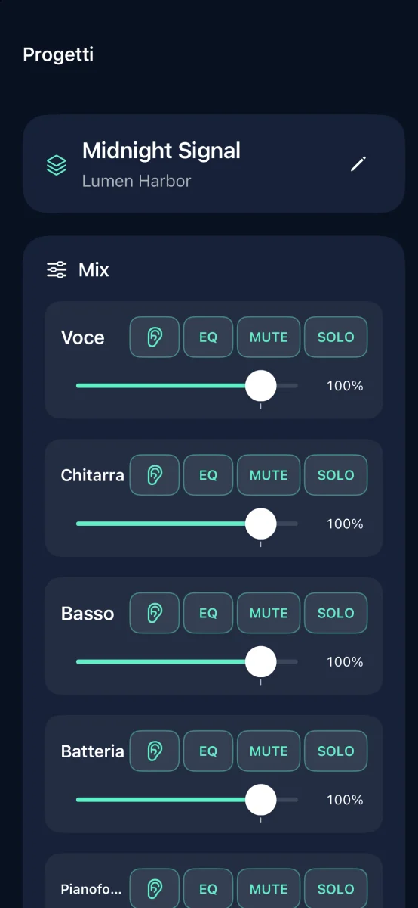
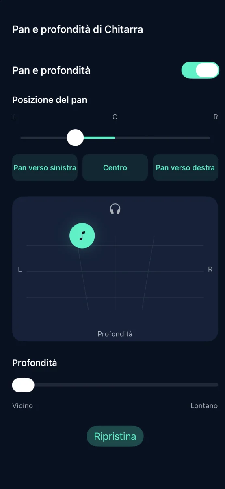
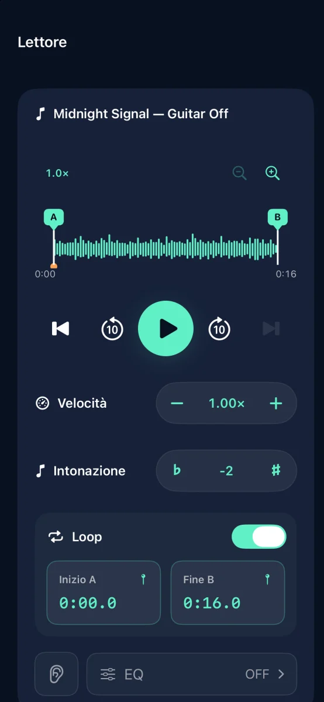

Separazione delle tracce e pratica musicale su iPhone

Trasforma i tuoi brani in basi per esercitarti
Separa il brano in sei tracce e silenzia quella che suoni tu.
Presto su App Store

Funzioni



Separazione delle tracce e pratica musicale su iPhone
La separazione avviene sul dispositivo. Non serve un account.
Regola volume, mute, solo, EQ, pan e profondità di ogni traccia. Esporta in M4A, MP3 o WAV.
Prova gratis tre separazioni riuscite. Un acquisto una tantum sblocca separazioni illimitate. Nessun abbonamento.
Non puoi importare brani in streaming o audio protetto da DRM. Usa audio per cui disponi dei diritti necessari.
Aiuto e assistenza ↗